The current dashboard
The dashboard displays this round’s Log results for operators and KVM readers. Operators select a project and station type; engineers maintain configurations. Starting monitoring does not start the ATE. This guide follows the current source and actual Tk test windows.
Except for historical field photos in “Field comparison”, new images come from automated tests opening the actual App with isolated data and controlled logs or failures. SNs, paths and long messages are examples. These images do not certify production behavior or physical KVM capture.
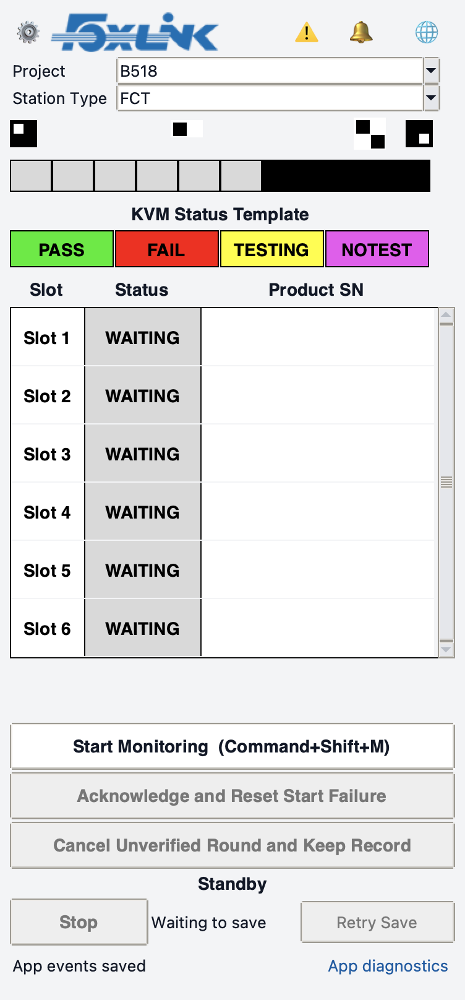
| Area | Purpose |
|---|---|
| ⚙️ Settings（設定） | Engineer configuration, events and Session records, and round-record retention. |
| ⚠️ Result conflicts（結果衝突） | Open pending candidate reviews. The badge signals pending work; closing the window does not resolve a conflict. |
| 🔔 Notifications / recovery（通知／復原中心） | Review alarms, save/archive failures and recovery actions. A badge can include different kinds of pending work. |
| 🌐 Language（語言） | Switch Traditional Chinese / English. Open windows refresh; status names, SNs and source data retain their meaning. |
| Project / station type（專案／機型） | Choose an existing engineer configuration. Station type means DFU/FCT/BT, not the product model. |
| KVM and details | Markers and result cells stay fixed. Up to 20 positions; details scroll and out-of-capacity cells stay black. |
| Start/stop, save retry, App diagnostics | Start/stop a round, retry failed persistence, or open App diagnostics for the reason. |
Before starting
- Verify the App version, project/station type and readable Log folders.
- Check capacity and source-to-position mapping against the fixture. Capacity is not this round’s loaded quantity.
- Resolve pending reviews and startup faults. Handle persistence failures separately in recovery.
- Keep the fixed dashboard visible to KVM. Key events bring it forward without permanent topmost mode or forcing keyboard focus.
Run one round
- Select the project and station type. Ask an engineer to create a suitable configuration if missing.
- Press Start Monitoring（開始監控）or Command + Shift + M. Starting / Log preparation is BUSY: source baselines are not ready, so ATE must wait.
- Wait for monitoring readiness, then start the tester. Log collection and actual ATE testing are separate events; TESTING or a trusted result provides activity evidence.
- Check Slot, SN and status. One PASS does not release the round. All positions must be final, same-round evidence trusted, and required reviews resolved.
- Handle conflicts, alarms, cancellation or startup reset as appropriate. Explicitly start every new round; there is no automatic retest.

Observed in this test: In the controlled LI1 scenario, the round snapshot and independent marker enter monitoring while the footer can still read Preparing. Use this image to compare activity and markers; footer text alone must not authorize testing. Pause and report if reliable readiness for this round is missing.


Engineer configuration: edit, validate, apply
Open ⚙️ → Engineer Configuration（工程師配置）. A configuration contains project, station type, platform, capacity, source mapping, paths and three deadlines. This replaces the old station-and-path form.
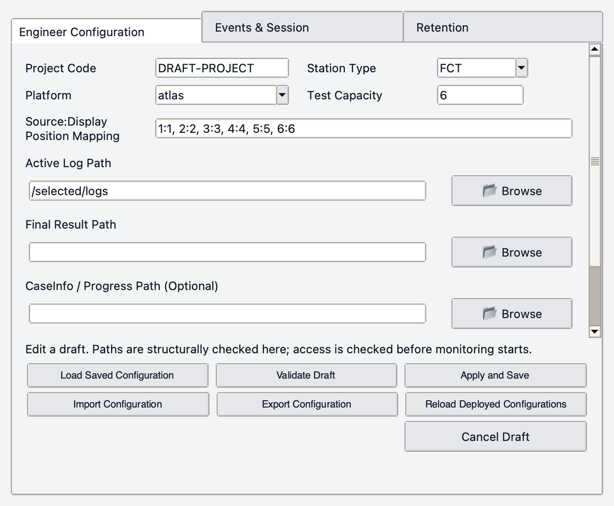
- Load the configuration and check project/station, platform and capacity (1–20).
- Set source-to-display mapping, such as 1:1, 2:2, using the platform’s source numbering; do not infer it from visible row labels alone.
- Use Browse（選擇）for the required roots. Start wait, test limit and round limit are positive integer seconds.
- Validate Draft（驗證草稿）, then Apply and Save（套用並保存）. Validation alone does not save. Cancel leaves the draft unapplied; a failed save retains the effective configuration.
- Export portable configurations for deployment. After import, check local paths and the effective selection. Reload Deployed Configurations（重新載入部署配置）reads saved data; consider unapplied edits first.
The configuration is snapshotted at round start; later changes do not rewrite that round. Preferences and configurations are stored in ~/Library/Application Support/B518LogSolution/preferences.json.
Platform paths and deadlines
These are B482 production examples, distinct from isolated test paths in screenshots. Other projects must use their own deployment paths.
| Platform / station | Live source | Final results |
|---|---|---|
| Atlas / DFU, FCT | /Users/gdlocal/Library/Logs/Atlas/active | /Users/gdlocal/Library/Logs/Atlas/unit-archive |
| BT | /vault/B482_RFTEST/TestData (CaseInfo optional, recommended) | /vault/B482_RFTEST/TestData |
Configure both Atlas active and final roots. A unitest hint does not determine the actual final-folder name on every deployment. In this BT example both TestData and CaseInfo use the TestData root. A final-export-only source does not imply TESTING from file copy time and may hit the start deadline before results arrive.
| Deadline | Timing and behavior |
|---|---|
| Start wait | Starts when the round is accepted, including preparation. With no trusted activity or valid result anywhere, stop collection, finalize unstarted positions as NOTEST and request review. If some positions have activity, the remaining unstarted positions become NOTEST at deadline without claiming the entire tester never started. |
| Test limit | Starts at each position’s first trusted activity; COMPLETING does not reset it. One position becomes TIMEOUT while others continue. |
| Round limit | Uses the common round start. If positions remain unfinished, stop collection, retain terminal results, finalize others as NOTEST/TIMEOUT by activity evidence and create a round alarm. When results are final and only conflicts remain, there is no review countdown. |
Built-in/migrated defaults: DFU start/test 30/480 s; B518/FCT 120/480 s; BT 30/240 s. The default round limit is 7200 s. The selected configuration determines effective values and engineers may change them.
Slot results and KVM
| Status | Meaning and next action |
|---|---|
| WAITING | No trusted activity at this position yet; check tester start and paths. |
| TESTING | Trusted activity observed; verify SN and wait for final results. |
| COMPLETING | Transitional state while awaiting final results; may be brief and is not PASS. |
| PASS / FAIL | Final platform result. FAIL can also mean Atlas activity ended before a trusted SN was read. Check round-level release separately. |
| NOTEST | Platform-declared no-test, or no trusted activity before deadline. Read source reasons in events; these are not interchangeable empty-fixture diagnoses. |
| TIMEOUT | An active position exceeded its limit; not product FAIL. Check late logs or a stalled tester. |
| STOPPED | An unfinished position when monitoring was manually stopped. Existing PASS/FAIL/NOTEST/TIMEOUT results remain. |
Current KVM layout
Each row has ten cells: capacities 1–10 use one row; 11–20 use two. Row one represents Slots 1–10 and row two 11–20. Out-of-capacity cells stay black; scrolling details does not move markers or cells. The old seven-cell mode is retired; readers must use the matching contract.
Separate state markers distinguish standby, preparation, monitoring, review, normal completion and releasable manual stop. READY does not imply PASS or available results; BUSY includes preparation and review. Product cells show per-position results: all green or retained previous results alone cannot authorize release.
Manual stop, cancellation and startup reset
| Situation | Action |
|---|---|
| Manual stop after monitoring readiness | Stop retains terminal results and marks unfinished positions STOPPED, preserving the manual_stop reason. Once all positions are final and reviews resolved, release is possible with a distinct manual-stop completion state. Operators decide rework scope. |
| Stop during preparation / readiness unverified | Visible cells are insufficient for release. After the source returns and required handling finishes, explicitly cancel the round, retain its records and start again. |
| Cancel round | Explicitly abandon further release while retaining records. Cancellation does not delete data, convert it to FAIL or automatically retest. |
| Startup failure | Fix paths/permissions and choose Confirm and Reset Startup Fault（確認並復位啟動故障）. This ends the failed request or cancels the created failed round while keeping evidence. Reset never starts ATE; saved faults remain recoverable after restart. |


Resolve conflicts and alarms
Same-round result conflict
When a position receives a candidate inconsistent with its locked result, the App keeps the original and requests review. Open ⚠️, select a candidate, and compare SN, status, source time, full paths and diagnostics. Matching filenames do not establish identical sources; scroll the original detail when needed.
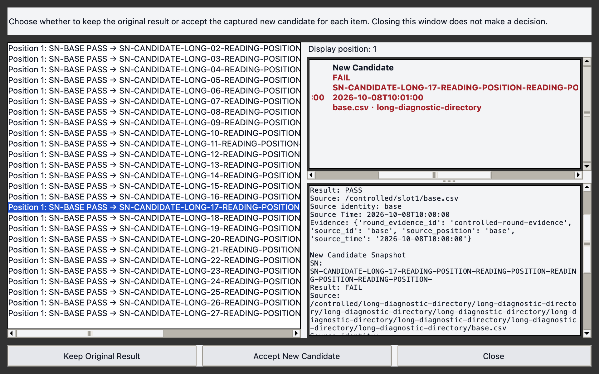
- Confirm the selected candidate. Review multiple candidates individually.
- Adopt a new candidate only with trusted same-round evidence; otherwise keep the original. Missing same-round evidence cannot be overridden; controls reflect eligibility.
- Closing only dismisses the window. Reopen it with ⚠️; it does not release results.
Round alarm
No activity before the start deadline, or unfinished positions at the round deadline, stops collection and creates an alarm. This does not prove ATE hardware failure. Read the reason and results, address the issue and explicitly acknowledge. Acknowledgement may be disabled while preparation/finalization is pending. It resolves only the alarm, not other conflicts, and never starts a new round.
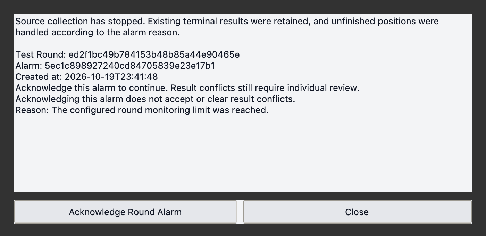
Notifications and persistence recovery
Open 🔔 for recovery. Notifications can include alarms and Session/audit/archive failures; inspect each tab’s reason and available action. Closing the window does not acknowledge anything; pending work remains available on reopening.
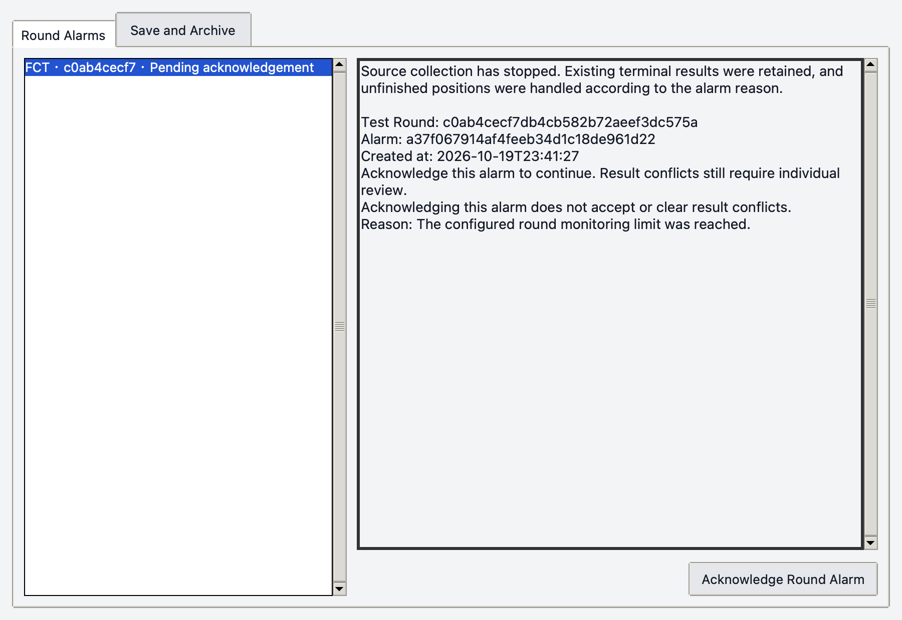
- Alarm tab: verify round_id and reason; acknowledge only that alarm.
- Save/archive tab: select a failed item, inspect diagnostics and retry. Persistence completeness and result release are separate; cell colors alone are insufficient.
- Verify recovery status after retry. If it still fails, retain the diagnostic information rather than masking the issue with another round.
- Closing waits for required writes. Failures keep a retryable close window available; cancel closing to return to handling. Canceling close is not round cancellation.
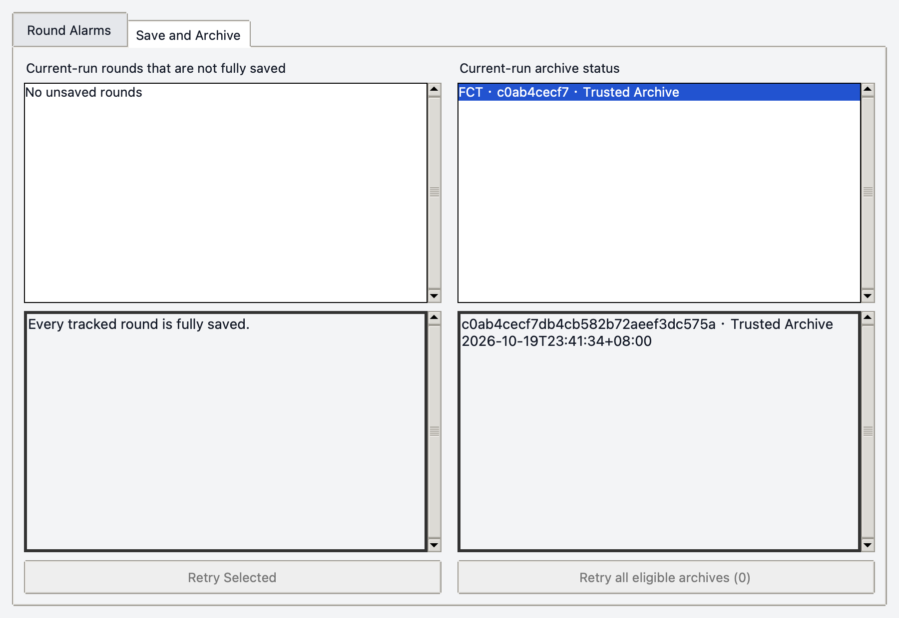
Historical events and App diagnostics
Historical queries read saved round and App events; they are not SN-based production/yield reports. Open history from Settings → Events and Session（設定 → 事件與 Session）. App diagnostics is also available from the dashboard.
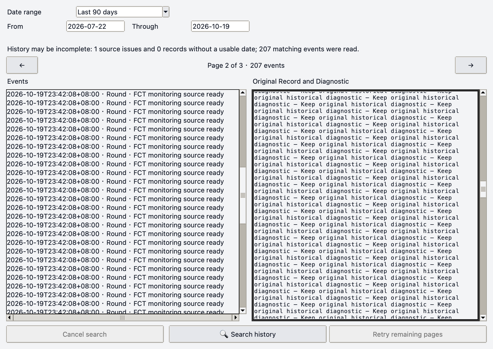
- Select start/end dates and query. Read the first published batch while later batches may still be preparing.
- Navigate pages and select an event for details. A page still preparing is not evidence that no events exist.
- One query retains fixed content and order. Later events or cleanup do not silently rewrite published pages. Query again for current data.
- Cancel a query when needed. Retry failed later batches while published content remains readable. Inspect query diagnostics for degraded indexes, unreadable sources or invalid dates.
- Language changes preserve the query, page, selection and reading position; legacy text and raw diagnostics retain their originals.
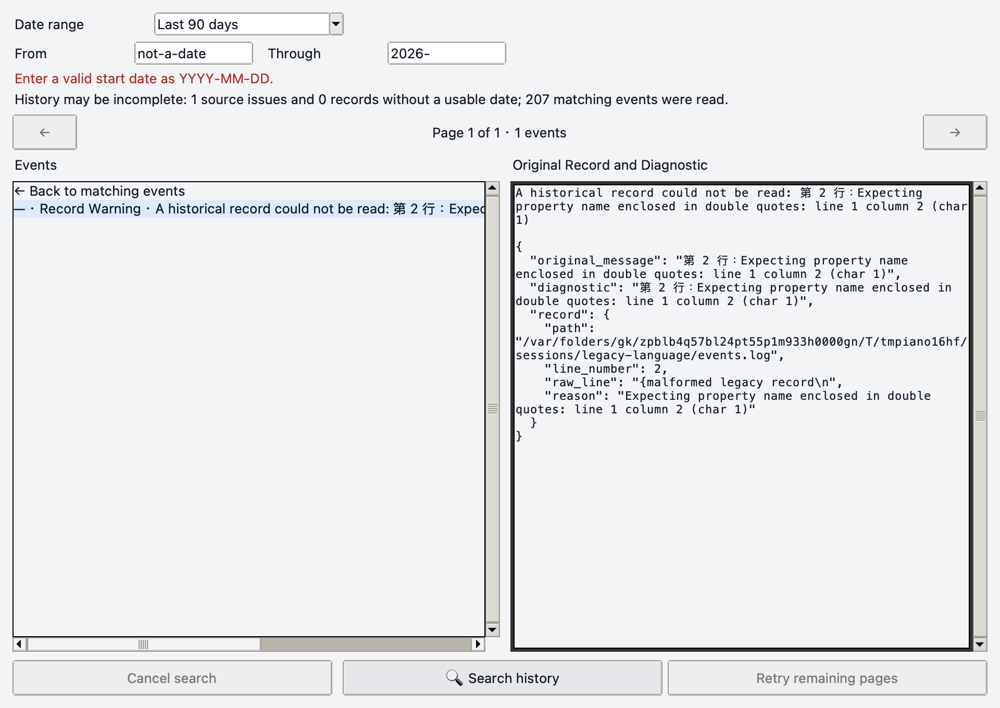
App diagnostics
Inspect App events and raw reasons for persistence or text-refresh failures. Retry event saving or text refresh as appropriate; controls are disabled when nothing is pending. App diagnostics is separate from product test-failure analysis.
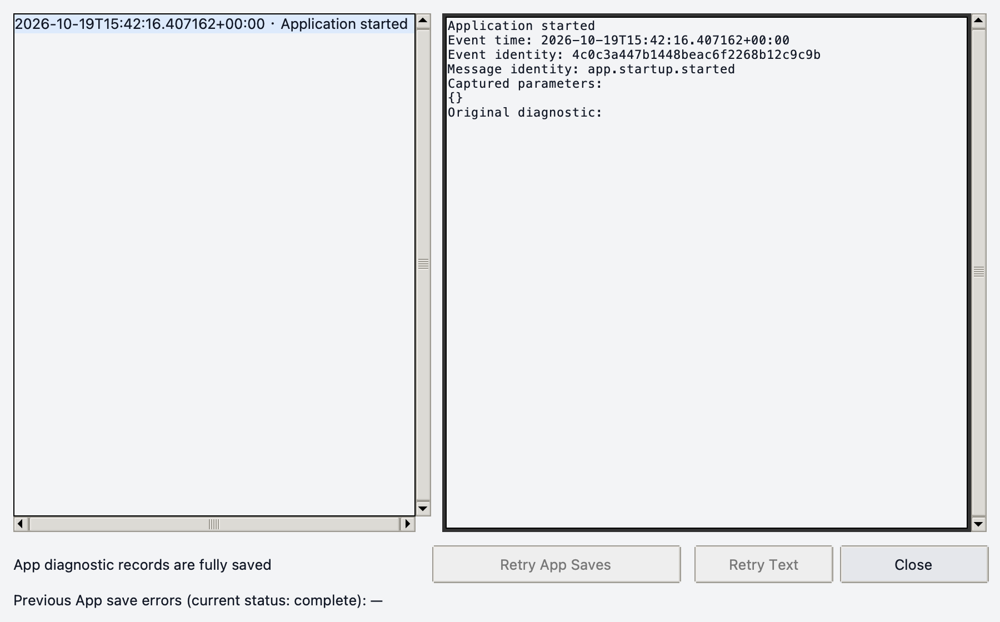
Round-record retention and cleanup
Set global retention days (a positive integer) in ⚙️ → Retention（保存期限）, and verify the effective saved value. Retention starts from trusted archival time, not the last viewing time. Active, pending-review, incompletely saved or untrusted archives are not ordinary expired rounds.
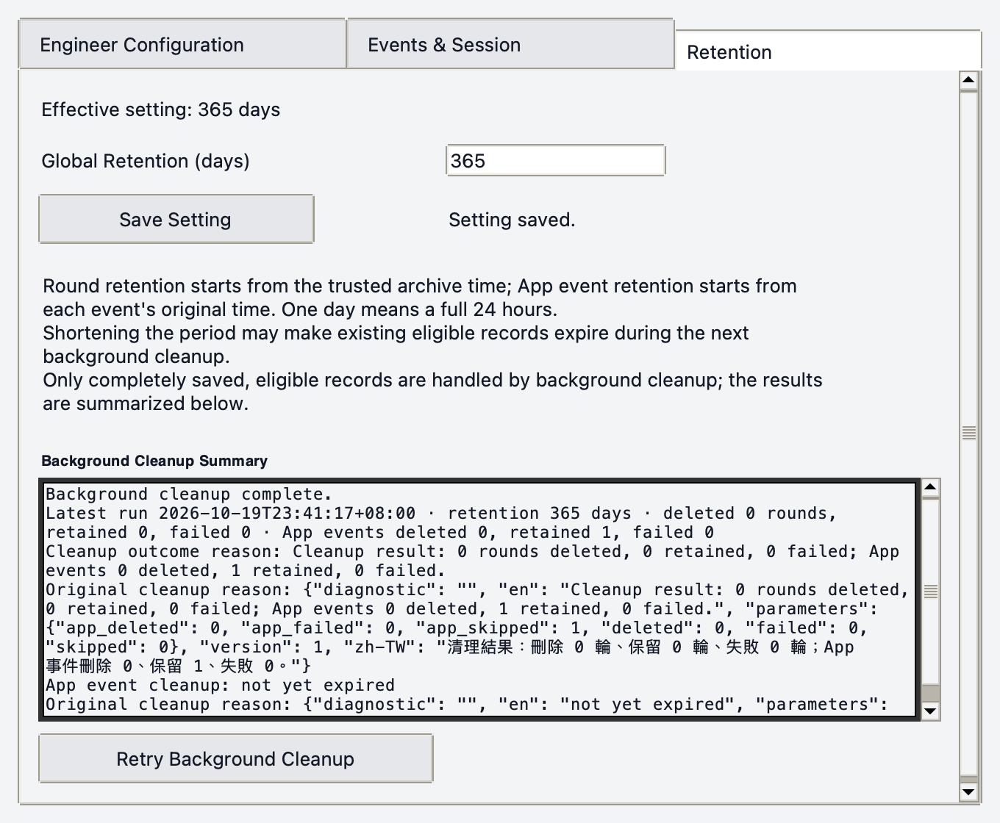
Read scan/delete/retain/failure counts and reasons in cleanup summaries. No data and cleanup failure are different. This manages the tool’s round records, excluding platform logs, configurations, preferences and manual exports. App events use the same global retention days but count from each original event time; rounds count from trusted archival time.
Historical field comparison
The following are historical production photos from 2026-09-11, retained for channel/Thread and result comparison. Their UI and seven-cell layout are obsolete. Current mappings are configurable; follow the effective configuration.
These photos show the tester HMI beside B518 Log Solution. Compare the channel, product SN, result, and KVM strip. The photos show visible results only; they do not establish the cause of a FAIL.
FCT: tester row numbers and Log Solution slots

| Tester row | Log Solution | Visible result | Product SN display |
|---|---|---|---|
| 0 | Slot 1 | FAIL | HK5HVH6ZH7300003YV |
| 1 | Slot 2 | FAIL | SN read failed（SN 讀取失敗） |
| 2 | Slot 3 | PASS | HK5HVH6YXFQ00003YV |
| 3 | Slot 4 | NOTEST | Blank |
| 4 | Slot 5 | FAIL | HK5HVH6ZBB700003YV |
| 5 | Slot 6 | FAIL | SN read failed（SN 讀取失敗） |
The tester uses NOTSET for row 3 in this photo, while Log Solution shows NOTEST. In this comparison, both indicate no test result for that channel.
BT: tester threads, CSV names, and slots

| Tester | TestData CSV | Log Solution | Visible result |
|---|---|---|---|
| TestThread 1 | Thread0 | Slot 1 | PASSED / PASS |
| TestThread 2 | Thread1 | Slot 2 | PASSED / PASS |
| TestThread 3 | Thread2 | Slot 3 | PASSED / PASS |
| TestThread 4 | Thread3 | Slot 4 | PASSED / PASS |
Report and retain evidence
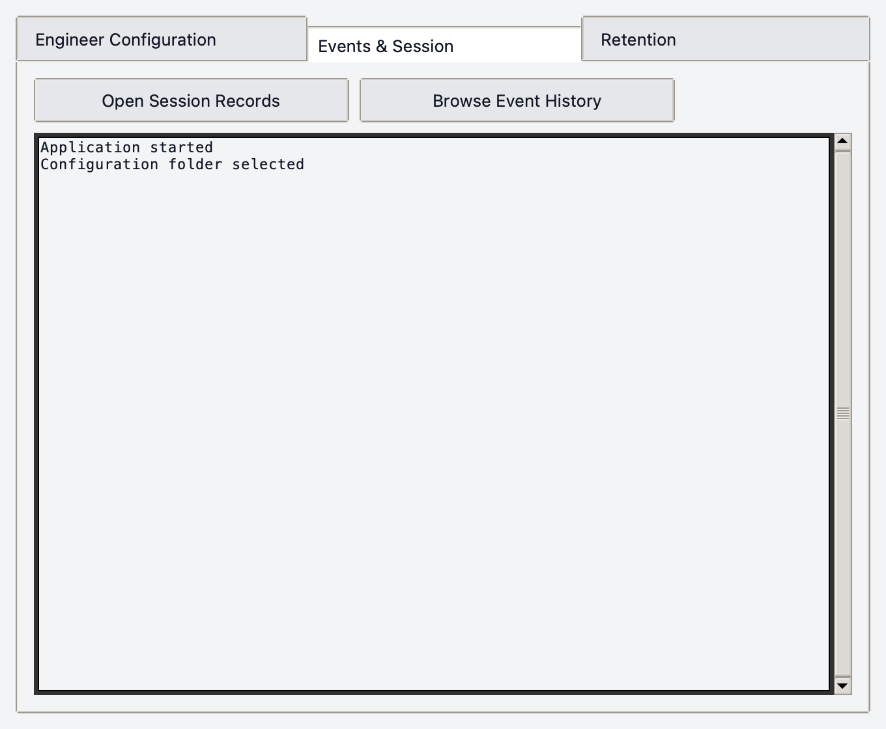
Use Open Session Records（開啟 Session 紀錄）to locate the folder. Common files include session.json, events.log and results.csv; round audit evidence is persisted separately. Sessions do not copy platform logs. Attach original source logs and record time, version, project/station and round_id.
Data flow and responsibilities
Adapters parse platform logs and source evidence. RoundCoordinator governs lifecycle, deadlines, conflicts, stop/cancel and result availability. The UI renders a shared snapshot. App events, round audits, Session persistence completeness and product PASS/FAIL are distinct concerns.
| Module | Purpose |
|---|---|
machine_profiles.py | Versioned configuration, validation, migration and persistence. |
monitoring_round.py | Shared round coordination and events. |
log_monitoring.py / platform_registry.py | Source monitoring, platform parsing and extension points. |
kvm_display_contract.py | KVM geometry and round markers. |
historical_event_query.py | Fixed queries, pagination, diagnostics and recovery. |
audit_records.py / round_retention.py / app_event_store.py | Audit, persistence/archive and cleanup. |
The core does not control ATE, Arduino, USB or TCP, and normal monitoring does not take screenshots. Development tests generate manual assets separately without adding capture dependencies to the production App.
Document revision and asset scope
Updated 2026-10-19 for source version 0.1.0. Photo/generated/manifest.json records source commit, working-tree status, test, language, pixels and SHA-256. Images capture actual Tk NSWindow.contentView content; they do not validate native menus, occlusion, foreground focus or physical KVM.
Distribute the entire Manual/ folder with Photo, CSS and JavaScript for offline use. Click images to enlarge and print the current language. Maintenance steps, scenario sources and validation evidence remain in docs/manual/ in the source project and are excluded from the reader package.